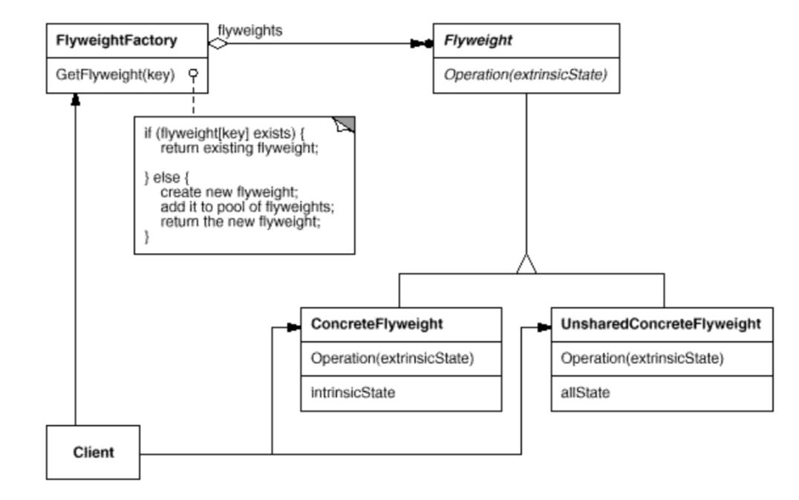

11 minutes
Structural Patterns
Structural Design Patterns help in composing small structures into larger structures, while ensuring that these larger structures remain flexible and efficient. These larger structures remain simplified through the realization of the relationship between it’s smaller component structures, that is, how each component inherits from each other.
Structural Class Patterns
- Composes interfaces and implementations through (multiple) inheritance.
- Useful to make independently developed classes work together.
Structural Object Patterns
- Realizes new functionality through composition of different objects.
- Ability of objects to change composition at run-time is integral for composition of different types of objects.
Adapter
Convert the interface of a class into another interface clients expect. Adapter lets classes work together that couldn’t otherwise because of incompatible interfaces.
The main goal of the Adapter pattern is to make interfaces compatible. It is implemented so that one would not be required to change the underlying behavior of any interface since the goal is to not add or modify a functionality, but rather just making them compatibility. Therefore, the Adapter pattern changes the interface, but does not change the implementation.
The Adapter pattern is also known as Wrapper.
Adapter patterns are of two types:
1. Class Adapter Pattern
Class Adapter simply performs multiple inheritance over incompatible interfaces, that is, it inherits the types of interfaces which have to be made compatible from their respective classes. It then implements the logic required to achieve compatibility.
Class Adapter Pattern Structure
The Client talks to the Target through it’s interface of type Request(), and it needs a certain type of work done which can only be done via the Adaptee class, which has an interface of type SpecificRequest().
The Adapter simply inherits both classes’ interface and then implements the logic to translate between both the interfaces and act as a proxy. The Client directly calls the Request() method in the Adapter, which then translates the data into a form acceptable by SpecificRequest(), and then uses the said interface originally inherited from the Adaptee.
2. Object Adapter Pattern
Object Adapter simply performs object composition over incompatible interfaces, that is, it holds an (object) instance of the target interface, and calls the designated method with the necessary data once the translation is done.
Object Adapter Pattern Structure
The Client talks to the Target through it’s interface of type Request(), and it needs a certain type of work done which can only be done via the Adaptee class, which has an interface of type SpecificRequest().
The Adapter simply inherits the Target’s Request() interface and accepts an (object) instance of the Adaptee. It then implements the logic to translate between both the interfaces and act as a proxy. The Client directly calls the Request() method in the Adapter, which then translates the data into a form acceptable by SpecificRequest(), and then uses the SpecificRequest() interface of the accepted (object) instance of Adaptee to accomplish the task.
Two-Way Adapters are bi-directional in nature, that is, they can be accessed via either of the incompatible interfaces to call the other interface. The Adapter class absorbs the important common methods of both systems and provides adaptations to both. In reference to the aforementioned examples, a two-way adapter can be accessed via both Request() and SpecificRequest() methods to call SpecificRequest() and Request() methods respectively.
Pluggable Adapter will be covered in Delegate.
Implementation Example: Adapter Pattern
Bridge
Decouple an abstraction from its implementation so that the two can vary independently.
For a set of classes that are just combinations of different subclass properties, a concrete class is required to be created for each combination. As the number of options per property grows, the number of concrete classes to be constructed grows exponentially, and at some point it will become unmanageable.
Therefore, the main goal is to structure a large class with extensive properties, or a set of related classes, into two parts:
- Abstraction
- Implementation
This structure decreases the coupling between the two parts and allows greater flexibility, therefore ensuring that these can be developed and modified independently of each other. The concept of an Abstraction implementing, or holding a reference to an instance of Implementor, is called the Bridge pattern.
The Bridge pattern is also known as Handle/Body.
The key is to move away from class inheritance and towards object composition.
Bridge Pattern Structure
The Client accesses Abstraction through it’s interface Operation(). Since the Abstraction holds an object of type Implementor, the Operation() interface delegates the call to the object’s interface OperationImp() . The structure is defined this way to ensure that any RefinedAbstraction (concrete abstraction) can hold an instance of any ConcreteImplementor (concrete implementation). This facilitates plugging any Implementor object with any Abstraction object, especially at run-time.
Each concrete object would inherit and extend the same set of methods as defined by Implementor, but it would return the data pertaining to their concrete specification in the result. Since the set of methods to be exposed by all ConcreteImplementor classes is now standardized by default, Abstraction can simply implement the same set of methods to produce RefinedAbstraction objects with their own additional specifications.
In reference to the aforementioned example, say Shape (Abstraction) supplements four concrete classes Circle, Triangle, Square, Rectangle (RefinedAbstraction). Now, Color (Implementor) implements an interface getColor(), and is inherited to create four new concrete classes Red, Blue, Green, Black (ConcreteImplementor) which redefine the interface getColor() to return their respective colors. The RefinedAbstraction classes always holds an instance of ConcreteImplementor.
With a direct implementation, it would take (4 x 4) 16 concrete classes (such as SquareRed, SquareBlue, SquareGreen, SquareBlack, etc.) to cover each combination of shape and color. However with Bridge pattern now, it would only take (4 + 4) 8 concrete classes defined by Shape and Color since each Shape object holds an instance of type Color, which can be swapped out with other Color objects. This drastically reduces the amount of work at present as well as in future since the Implementor can be extended to newer objects like Green and Black, and simply plugged in with existing Shape object, wherein earlier we would have to create concrete classes for all combinations of shape and colors.
Implementation Example: Bridge Pattern
Composite
Compose objects into tree structures to represent part-whole hierarchies. Composite lets clients treat individual objects and compositions of objects uniformly.
The Composite pattern enables uniformity among different components of a hierarchy so that the hierarchy could be used as if it were a single object. This is helpful in cases where we don’t need to differentiate between a single object and a collection of objects. Rather, we could simply apply the same operations (functions) on the single object as well as the collection itself.
Composite Pattern Structure
The Component defines the behavior for all the components. It declares an interface which is implemented by:
- Leaf (as in a tree/hierarchy): represents a single object since it has no children.
- Composite (collection of objects): represents a tree/hierarchy since it has children.
- It will pass any request from the client subsequently to it’s children.
- It may perform additional operations, being the root, before passing the request to it’s children.
The Client can access both the aforementioned components via the inherited Operation() method, without having to know if it’s accessing a single object or a collection.
Implementation Example: Composite Pattern
Decorator
Attach additional responsibilities to an object dynamically. Decorators provide a flexible alternative to subclassing for extending functionality.
The Decorator pattern acts as a wrapper (and therefore also known as Wrapper) over an existing class to add new functionality to an existing object of the said class. This enables us to add new features to a pre-existing class without changing it’s structure. This pattern is especially helpful in cases where a base object’s behavior is to be altered with a lot of different options providing minimal functionality since we can simply apply wrappers (multiple even) instead of altering the definition of the base object itself.
For example, different toppings can be put on a base pizza. There can be an endless number of toppings with their own properties and costing. In such a scenario, creating classes for each topping and inheriting from the base pizza is a possible option, but it is infeasible because:
- This can lead to class explosion since number of toppings can become unmanageable.
- Each class would only maintain minimal data pertaining to it’s own topping type, such as name and cost.
- Inheritance is static, therefore it would not be possible to alter an object’s behavior at run-time.
Decorator Pattern Structure
The Component implements the Operation() interface which is implemented by ConcreteComponent, a base object to whose behavior can be modified. The Decorator maintains a reference to another ConcreteComponent, on which it adds additional functionality to produce ConcreteDecoratorA and ConcreteDecoratorB.
Implementation Example: Decorator Pattern
Façade
Provide a unified interface to a set of interfaces in a subsystem. Façade defines a higher-level interface that makes the subsystem easier to use.
The Façade pattern is used to provide a simple interface to a complex system. A unified entry point to the whole system makes it easy for the client to make use of the system’s functionality without looking any deeper than the interface itself. This allows for decoupling between the client and the underlying complicated network of various subsystems that work together to achieve the said functionality.
The client would only have to look deeper than the interface only in the cases where they want customizability of the functionality, in which case they would have to directly access the interfaces of the necessary subsystems.
Façade Pattern Structure
The Client interacts with the Facade, which then delegates the request to the appropriate subsystem. The subsystem classes implement the functionality, while having no backward reference to the Facade.
Implementation Example: Facade Pattern
Flyweight
Use sharing to support large numbers of fine-grained objects efficiently.
The Flyweight pattern introduces the concept of a single object serving in different contexts rather than creating multiple small and similar objects for each context. This is done in a way that it’s indistinguishable from an unshared object.
A flyweight only enables sharing and doesn’t enforce it, therefore not all subclasses of a Flyweight are necessarily shared. Such flyweight objects in turn might have objects of shared flyweight type as children.
To achieve this, a flyweight maintains two states:
- Intrinsic
- Contains information independent of contexts and is shared between all contexts.
- Extrinsic
- Contains context specific information and is not shared between contexts.
 Flyweight Pattern Structure
Flyweight objects implement an interface Operation(extrinsicState) for accessibility. Flyweight Factory creates and manages a pool of all Flyweight objects, and is responsible to return an existing flyweight or instantiate a new one if none exist, when the Client requests for one. As made clear by the interface’s signature (argument list), the extrinsic state of a flyweight is stored and/or computed and passed to the flyweight by the Client when it is being invoked, via the Flyweight Factory. An important point is that the Flyweight is instantiated with extrinsic state passed in constructor, and is therefore immutable. This enables the Client to access multiple flyweight objects at the same time.
A ConcreteFlyweight extends the inherited Operation(extrinsicState) interface along with maintaining storage intrinsicState for different contexts.
UnsharedConcreteFlyweight is an example of an unshared flyweight, and it may contain ConcreteFlyweight objects as children.
Flyweight Sharing Model
The model is depicted in the image above. aClient objects request for flyweight objects from the pool. This request is fulfilled by aFlyweightFactory which provides aConcreteFlyweight objects.
Implementation Example: Flyweight Pattern
Proxy
Provide a surrogate or placeholder for another object to control access to it.
The Proxy pattern, or Surrogate pattern, controls the access to an object. A proxy class is created which implements the same interface as the object. All requests from the client to the object are passed via a proxy class’ object, enabling us to perform additional operations before and after the request, and before the request reaches the object, if necessary.
The prime use case for the pattern is instantiation of a resource-heavy object which cannot be kept in memory all the time. We can resort to this pattern to model an on-demand behavior, that is, the object will be instantiated when the request arrives and destroyed when the request is fulfilled, saving system resources.
Proxy Pattern Structure
RealSubject defines the actual object, which inherits from the Subject class that defines the common interface Request(). The Client requests the RealSubject. This request is routed through a placeholder object of type Proxy, which also inherits from the class Subject to ensure that it’s interface remains the same as RealSubject. This Proxy object contains a reference to the RealSubject object, to which delegates the request.
Proxy can be of different types:
- Remote Proxy
- Encodes a request and all its associated data, and sending it to the real object which lies in a different address space.
- Virtual Proxy
- Caches additional information about the real object so that the delegated request can be deferred.
- Protection Proxy
- Performs permission checks of the client to disallow unauthorized access.
Implementation Example: Proxy Pattern
Citation: Gang of Four Design Patterns
design-patternsgangs-of-fourstructural-patternsadapterbridgecompositedecoratorfaçadeflyweightproxy
2170 Words
2021-09-10 05:30 +0530